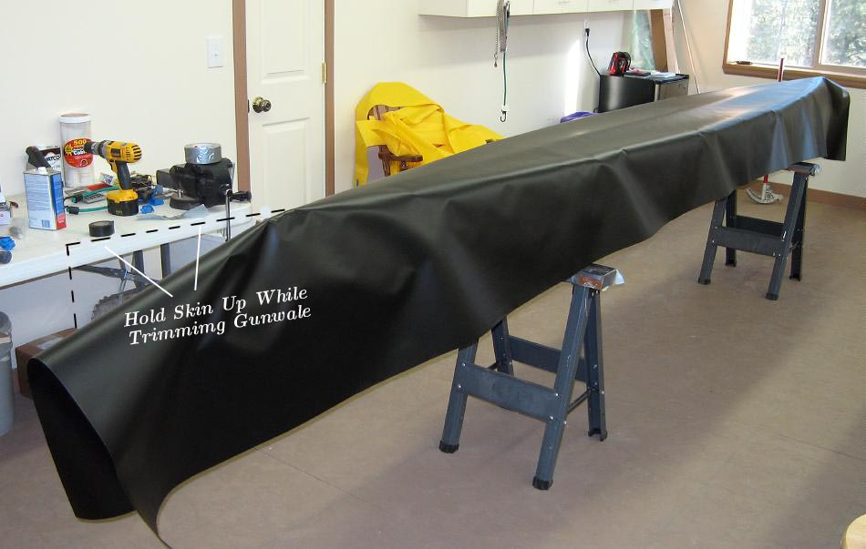

| Sonnet ( Hull Skin) | Menu Previous Page Next Page |
|

Most PVC has a smooth (dull) side and a rougher (glossy) side. Either side is suitable as the outside of the skin. I prefer the glossy side out though some builders feel that the dull side has more vinyl and is a bit more durable. After deciding which side is to be out, reverse the side and place that one out as it will become the inside that will be glued to the sponson sleeves. By reversing the skin at this time, it will be easier to apply cement.
Trim the PVC along it's length with 2" (50mm) extending past the gunwales. At both ends in the area of the shallow sloping stems, be sure to hold the skin up and even with the rest of the hull bottom when trimming to avoid cutting the skin too short along the gunwales. |
|